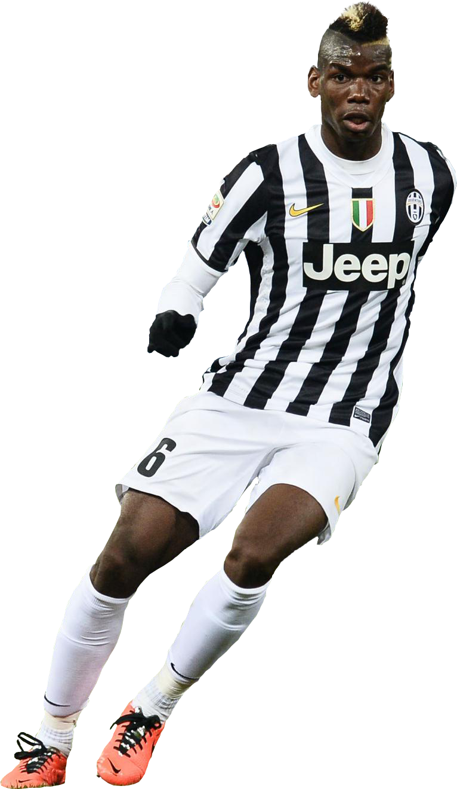

Pogba
Paul Pogba es un futbolista francés que se desempeña como centrocampista. Nació el 15 de marzo de 1993 en Lagny-sur-Marne.
Inició su formación en 1999 en los filiales del US Roissy-en-Brie, donde se entrenó durante 7 años. En 2006 se trasladó al US Torcy, donde llegó a ser el capitán del equipo sub-13. Pasó allá una temporada y luego se unío con el equipo profesional – el Le Havre. Fue destacado por su actuación y a finales de su carrera juvenil recibió ofertas de varios clubes europeos. El 1 de agosto de 2009 el Manchester United anunció la incorporación de Pogba en las canteras del club, donde el joven futbolista se entrenó durante 2 años. El 10 de octubre debutó con el equipo sub-18 del Manchester United en el partido ante el Crewe Alexandra. En 2010 fue convocado al segundo equipo, con el cual debutó el 2 de noviembre en el partido ante el Bolton.
El 19 de febrero de 2011 ascendió al equipo principal y fue elegido a disputar el partido de la FA Cup ante el Crawley Town, aunque no logró llegar a la cancha. El 20 de septiembre debutó en el partido de la Copa de la Liga de Inglaterra ante el Leeds United. El 31 de enero de 2012 Pogba jugó su primer partido de la Premier League ante el Stoke City, ingresando como suplente de Javier Hernández en el minuto 72.
En verano de 2012 dejó el club y el 3 de agostó firmó el contrato por 3 años con la Juventus como agente libre. El 22 de septiembre debutó en su primer partido de la Serie A contra el Chievo. El 20 de octubre marcó su primer gol ante el Napoli.
Poul Pogba es uno de los jugadores más perspectivos del fútbol frances. A partir de 15 años fue convocado a disputar los partidos internacionales con las Selecciones sub-16, sub-17, sub-18 y sub-19 de Francia. A partir de 2012 llegó a la Selección de fútbol sub-20 de Francia, donde participó en 3 partidos.
